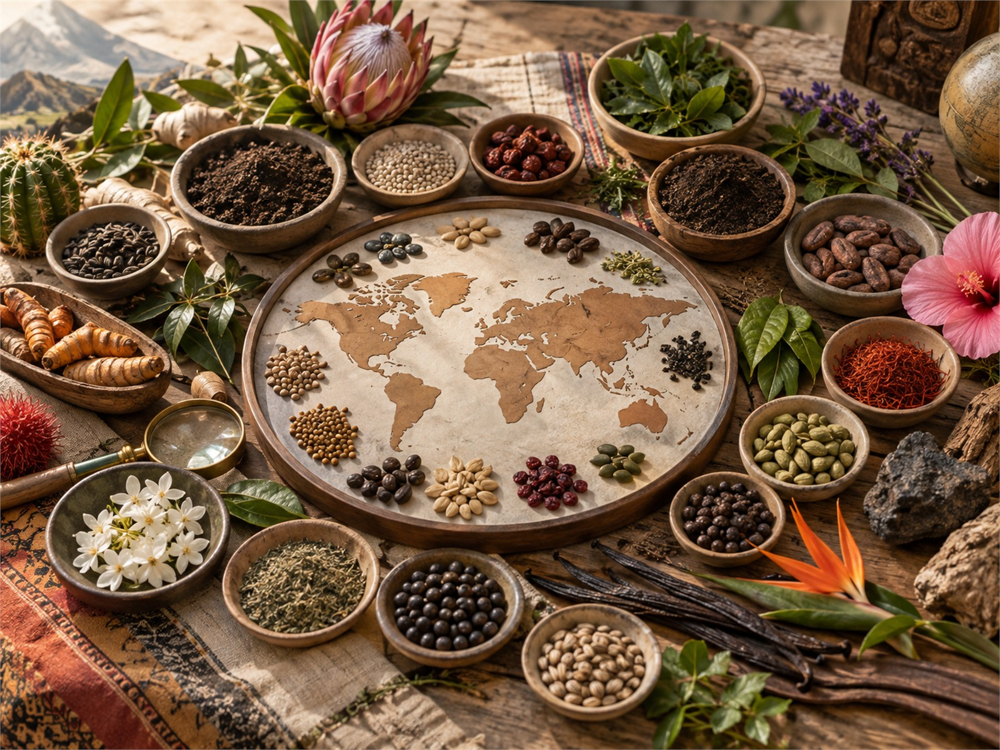
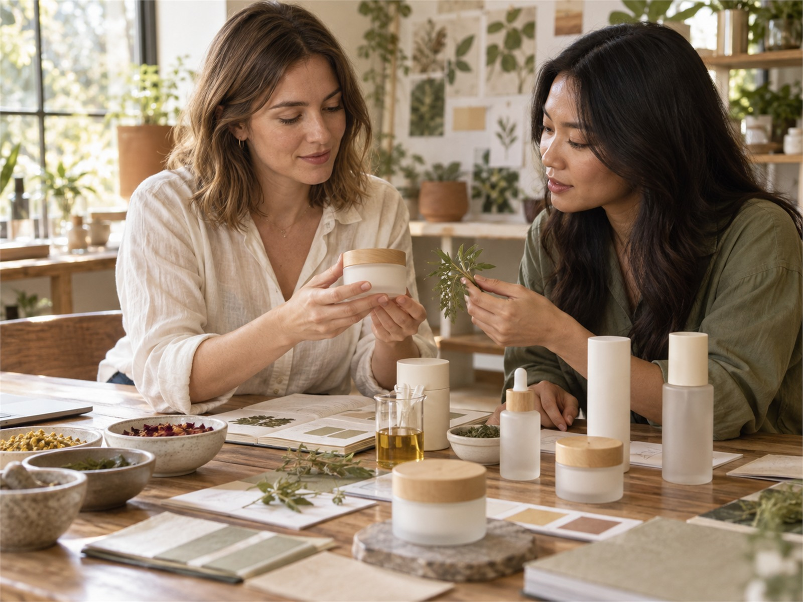

NATURIVE STORY
ASIA PACIFIC
서울 연구소와 아시아 허브에서 원료 발굴과 고객 기술지원을 담당합니다.
지역의 다양성과 글로벌 연구 역량을 연결합니다
현지 원료 전문가와 연구기관, 고객사 네트워크가 하나의 기준으로 협업합니다.

서울 연구소와 아시아 허브에서 원료 발굴과 고객 기술지원을 담당합니다.

규제 대응과 트렌드 분석, 공동 연구를 통해 글로벌 시장 진입을 지원합니다.

주요 식물 산지의 생산자와 장기 파트너십으로 지속가능한 공급을 만듭니다.